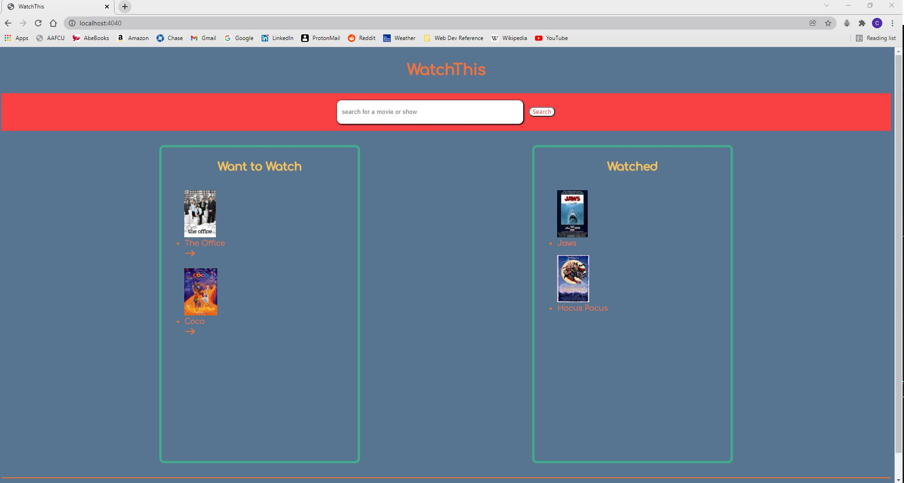

.jpg)
Caitlin Thompson
Thinker | Reader | Lifelong Learner
About
I am currently a student at Devmountain specializing in Web Development. I have a background in public health and environmental consulting, but I decided to embark on a career change in October 2021. I enjoy puzzles and building things, and I'm hopeful that a career in web development will allow me to put those skills to work.
Outside of coding, I enjoy animals of all kinds (even the ones with scales and sharp teeth), reading science fiction, fantasy, history, and science books, swimming, hiking, and traveling.
Skills
Projects
WatchThis is a web app I created for my Foundations Capstone Project at Devmountain. It allows users to keep track of which shows and movies they've watched and which ones they want to watch in the future. It was built using HTML, CSS, JavaScript, and the Open Movie Database API.
I built the app because I love movies and tv and thought it would be useful to have an independent, centralized way of keeping track of what shows and movies I've watched and which ones I want to watch, regardless of which service they're streaming on.
See my project demo here.

Contact